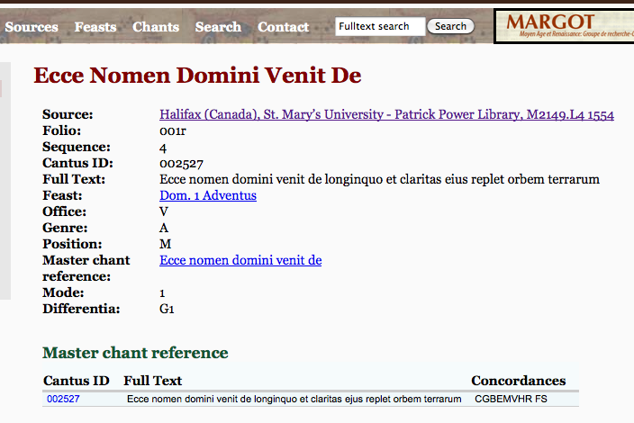

YES we CANTUS!
Posted by cmotuz on October 18, 2011
This past week, while we wait for our .tiffs to be ready for OMR, we’ve been combing and parsing the plethora of information available in the CANTUS database. And what a fantastic resource it is! For each Latin ecclesiastical chant in each manuscript, CANTUS gives a page of information. The information for the first chant set to music in Salzinnes, for instance, looks like this: 
As the first two letters of SIMSSA stand for “Single Interface,” we’d like to make this information available on the same system as the searchable images of the Salzinnes antiphonal. As space is not an issue, we’d also like to automatically expand the abbreviations to their full names without having to refer to the legend, so I’ve been getting my head around reading the above, especially the liturgical use information, thanks to the legends provided on the CANTUS website. The feast, Dom. 1 Adventus, means the first Sunday of Advent (this year it’s November 27th); the Office designation “V” stands for Vespers, while Genre “A” and Position “M” refer to “Antiphon” and “Magnificat” respectively. Mode 1 refers to the Dorian mode on D, but the Differentia I still haven’t got my head around - that’s my task for today. There are a few pitfalls too: while this is a relatively easy example, some letters and can mean more than one thing depending on context (ex. M is both Matins and Magnificat), and numbers indicating position change format depending on what office they refer to. In order not to take the CANTUS information and confuse it before passing it on to interested academics, I’ve got to understand their system entirely.
I have to admit that, coming from a performer perspective, two weeks ago this all seemed to me to be a great deal of academic information, interesting mainly to pre-16th-century specialists and to collectors. Then last week I was sitting down for sushi with a friend, and we were trying to come up with a concert that would involve both baroque trombone (my instrument) and baroque oboe (his). Eventually we settled on Zelenka, but how to present his music in a coherent concert? As some of the best music is hidden away in psalms and magnificats, we decided that piecing a vespers together would be a good idea. I know about the basic layout of a vespers (Psalms, Hymn, Magnificat) from playing Monteverdi’s polyphonic setting of 1610 countless times, but to piece together a proper liturgical vespers service, we would need the bits in between. We would need antiphons. Suddenly we were both a bit lost. Do antiphons belong to specific psalms or to feast days? How do we find psalms appropriate to the day of the year? Were there antiphons on both sides of the Magnificat? How do we pair the mode of the antiphon with that of the pieces? Which antiphons come from the part of Germany where Zelenka worked? Suddently all of the above information is relevant and practical, and I get to become an expert on it in the coming weeks. Excellent.
In other news, a very big congratulations to Ashley Burgoyne for finishing his dissertation last week - bravo!!!